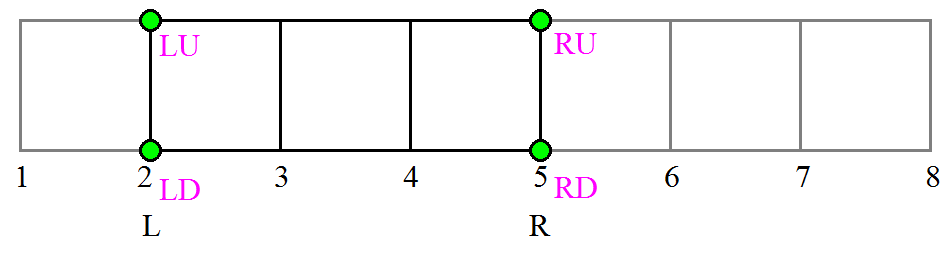
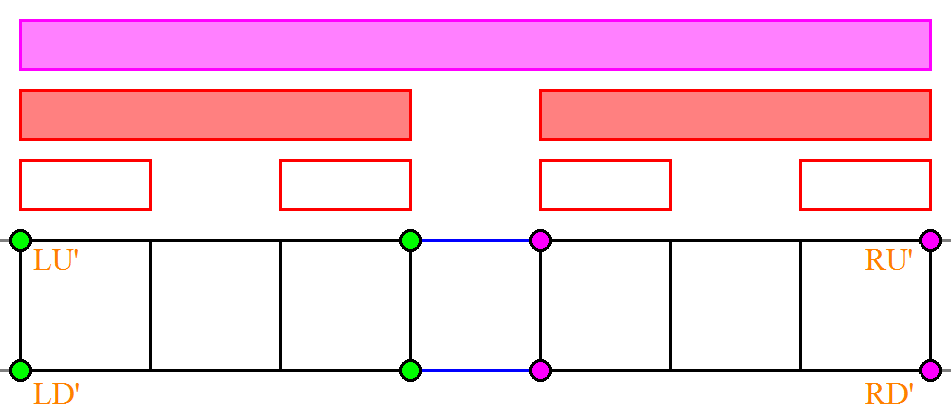

有一天，由于某种穿越现象作用，你来到了传说中的小人国。
小人国的布局非常奇特，整个国家的交通系统可以被看成是一个 $2$ 行 $C$ 列的矩形网格，网格上的每个点代表一个城市，相邻的城市之间有一条道路，所以总共有 $2C$ 个城市和 $3C - 2$ 条道路。
小人国的交通状况非常槽糕。有的时候由于交通堵塞，两座城市之间的道路会变得不连通，直到拥堵解决，道路才会恢复畅通。
初来咋到的你决心毛遂自荐到交通部某份差事，部长听说你来自一个科技高度发达的世界，喜出望外地要求你编写一个查询应答系统，以挽救已经病入膏肓的小人国交通系统。
小人国的交通部将提供一些交通信息给你，你的任务是根据当前的交通情况回答查询的问题。交通信息可以分为以下几种格式：
Close r1 c1 r2 c2：相邻的两座城市 $(r_1, c_1)$ 和 $(r_2, c_2)$ 之间的道路被堵塞了；Open r1 c1 r2 c2：相邻的两座城市 $(r_1, c_1)$ 和 $(r_2, c_2)$ 之间的道路被疏通了；Ask r1 c1 r2 c2：询问城市 $(r_1, c_1)$ 和 $(r_2, c_2)$ 是否连通。如果存在一条路径使得这两条城市连通，则返回 Y，否则返回N。第一行包含一个正整数 $C$ ($C \leq 10^5$)，表示网格的列数。
接下来若干行，每行为一条交通信息，以单独的一行 Exit 作为结束。我们假设在一开始所有的道路都是堵塞的。保证信息条数 $\leq 10^5$。
对于每个查询，输出一行一个字符，为 Y 或 N。
这道题其实是 "动态图连通性" 问题的一个简化版。
动态图连通性就是给一个图，支持加边、删边、询问连通性。强制在线的动态图连通性的算法并不简单，然而可离线的动态图连通性的算法和本题的算法是非常相近的，即运用线段树维护连通性。
我们把每个城市都看作是一个点，不同城市之间的道路看作一条边，那么整个小人国就呈现一个 $1 \times (C-1)$ 的网格。
我们用线段树节点 $[L, R]$ 记录第 $L$ 个交叉口和第 $R$ 个交叉口所组成的 $4$ 个节点在 $[L, R]$ 的导出子图中的两两连通性，如下图：

对于上图 $L = 2, R = 5$，节点 $[2, 5]$ 记录 LU, RU, LD, RD $4$ 个点在黑色的边 (当然有的边可能是不存在的) 之间的两两连通性。
特别地，如果 $L = R$，我们假定 LU 和 RU 重合，LD 和 RU 重合，此时如果那条竖着的边连通，$6$ 个 "节点对"全部连通，否则只有重合的 $2$ 个 "节点对" 连通。
然后考虑线段树的 update() 过程，假定两个子节点如下图所示：

注意中间两条蓝边是需要记录的，因为左右两棵子树都没有维护关于蓝边的信息。
对于新的 LU', RU', LD' 和 RD'，考虑 LU' 和 RU' 的连通性，那么只有两种情况，要么 LU' 和左子树的 RU 连通、上面的蓝边存在、且右子树的 LU 和 RU' 连通，要么为 LU' 和左子树的 RD 连通、下面的蓝边存在、且右子树的 LD 和 RU' 连通。
对于 LU' 和 RD'，LD' 和 RU'，LD' 和 RD'，都可以类似分析出来。
至于 LU' 和 LD'，由于是在导出子图 (黑色部分) 的连通性，则它们要么在左子树中就已经连通，要么就是走一个 C 字形，即先 LU' 与左子树的 RU 连通、两条蓝边都存在、右子树的 LU' 和 LD' 连通、且左子树的 RD 和 LD' 连通。对于 RU' 和 RD'，则完全类似。
于是可以建立一个 merge(x, y, mid) 函数，传入左右子树的连通性和两条蓝边的存在情况，给出新的连通性。
接下来考虑修改 (加边/删边)，如果修改的是竖边，则只需单点修改即可。
如果修改的是横边，可以发现有部分节点需要更新，因此也可以直接调用单点 "修改" (其实只是为了后面 update 的 merge())，不过要注意的是，横边需要另外开一个数组来记录。
考虑询问。在 $2 \times n$ 格点图中，两点间的路径至多包含以下三个部分：左 C 形、中间部分、右 C 形，如下图所示：
我们枚举 "中间部分" (黄色部分) 的两个端点 (共 $4$ 种方案)，比如说从 LU 到 RU，那么，这种方案可行需要满足中间部分的 LU 和 RU 连通、左边一列所需节点为 LU 或左边的 LU 和 LD 连通、右边一列所需节点为 RU 或右边的 RU 和 RD 连通。
注意，由于左/右 C 形的存在，此处左边的 LU 和 LD 连通不能仅仅在中间部分的导出子图中，应该是整个图的连通，因此需要调用三次线段树的 range()，即 $1 \sim c_1, c_1 \sim c_2, c_2 \sim C$，这里假定 $c_1 \leq c_2$。
最后，如果这 $4$ 种方案只要有一种行得通，则答案就是 Y，否则为 N，时间复杂度为 $O(n \log C)$，其中 $n$ 为操作个数。不过，因为线段树内部只存储了 $6$ 个布尔 (连通性)，所以可以压缩到一个 char 中，通过位运算来避免高维数组和 struct。
#include <bits/stdc++.h>
#define N 426835
#define segc int M = L + R - 1 >> 1, lc = id << 1, rc = lc | 1
using namespace std;
// uu(1) ud(2) du(4) dd(8) l(16) r(32) or u(1) d(2)
typedef char state;
int n, r1, r2, c1, c2;
char cmd[10];
state ho[N], st[N];
inline state merge(state x, state y, state mid){
state res = 0; mid |= mid<<2 | mid<<4;
res |= (x & mid & y | x>>1 & mid>>1 & y>>2) & 1;
res |= (x<<1 & mid<<1 & y | x & mid & y>>2) & 2;
res |= (x & mid & y<<2 | x>>1 & mid>>1 & y ) & 4;
res |= (x<<1 & mid<<1 & y<<2 | x & mid & y ) & 8;
res |= ((x<<4 & mid & y & mid>>1 & x<<1) | x) & 16;
res |= ((y<<5 & mid<<1 & x & mid & y<<2) | y) & 32;
return res;
}
void build(int id, int L, int R){
if(L == R) {st[id] = 9; return;}
segc; build(lc, L, M); build(rc, M + 1, R);
st[id] = 0;
}
void adj(int id, int L, int R, int h, state v = -1){
if(L == R) {~v ? (st[id] = v ? 63 : 9) : 0; return;}
segc; h <= M ? adj(lc, L, M, h, v) : adj(rc, M + 1, R, h, v);
st[id] = merge(st[lc], st[rc], ho[M]);
}
state range(int id, int L, int R, int ql, int qr){
if(ql <= L && R <= qr) return st[id];
segc;
if(qr <= M) return range(lc, L, M, ql, qr);
if(ql > M) return range(rc, M + 1, R, ql, qr);
return merge(range(lc, L, M, ql, M), range(rc, M + 1, R, M + 1, qr), ho[M]);
}
int main(){
scanf("%d", &n);
build(1, 1, n);
for(scanf("%s", cmd); *cmd != 69; scanf("%s", cmd))
switch(scanf("%d%d%d%d", &r1, &c1, &r2, &c2), *cmd){
case 79: {
if(c1 == c2) adj(1, 1, n, c1, 1); // single column
else {ho[c1 > c2 ? --c1 : c1] |= r1; adj(1, 1, n, c1);}
break;
}
case 67: {
if(c1 == c2) adj(1, 1, n, c1, 0); // single column
else {ho[c1 > c2 ? --c1 : c1] &= ~r1; adj(1, 1, n, c1);}
break;
}
case 65: {
state p, q, r; bool succeed = false;
if(c1 > c2) {swap(r1, r2); swap(c1, c2);}
p = range(1, 1, n, 1, c1);
q = range(1, 1, n, c1, c2);
r = range(1, 1, n, c2, n);
p & 32 ? q |= 16 : 0; r & 16 ? q |= 32 : 0;
q & 16 ? r1 = 3 : 0; q & 32 ? r2 = 3 : 0;
succeed |= q & 1 && r1 & 1 && r2 & 1;
succeed |= q & 2 && r1 & 1 && r2 & 2;
succeed |= q & 4 && r1 & 2 && r2 & 1;
succeed |= q & 8 && r1 & 2 && r2 & 2;
putchar(succeed ? 89 : 78); putchar(10);
break;
}
}
return 0;
}
坑1：在压缩后的位运算中，需要仔细运算，不要出现移位多/少了的这种情况，还有最后的 & 和 && 分清楚。
坑2：在判断 LU' 和 LD' (RU' 和 RD') 的连通性时，不要忘记在 "对应子树就已经连通" 的情况，即最后做一次 | 运算。